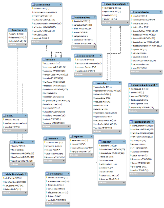

-
Stage 1:
ProposalIntroduction
The study is focused on the donor management and relief good allocation of OG Cares Foundation which is a part of the Organo Gold Inc. During typhoons and calamities, proper relief good allocation has always been an issue. People in the affected areas are eager to get help in order for them to survive and the foundations and organization are abrupt to answer to these needs given that their resources are handled well. OG Cares Foundation is one of these organizations who try to answer to the needs of the victims as soon as they can.
Determining the baseline to begin operations especially on the first day is very crucial, establishing the list of affected members, identifying possible field quarters, estimating funds necessary and adjusting to donations, are examples of information the company need in order to maximize their efforts in relief. Managing donor info and information relay to them provide an environment of transparency and trust as to how their generosity is put to use. Moreover, the introduction of this. -
Methodology: Customized Agile & Spiral Model
1. Collection and analysis of information
2. Conceptualization of proposed system
3. Prototyping
4. Development of the system
5. System Testing
6. Implementation -
Project Gantt Chart

-
Stage 2:
System
PrototypeBusiness Rules
One of the most important things to identify in interviews, for setting the auto calculation intelligence of the system.
1. Stockist Center Selection and Relief Pack Claiming
2. Reachability Matrix from Incident reports
3. Arrangement of areas to prioritize (Response Plan-Start Operation)
4. Resource Allocations Priority Rules
5. Stockist Centers Arrangement
6. Trasportation Selection Rule
7. Unable to deliver goods -
Database Design

-
System Design and Coding
1. Data Specification & Screen & Report Layout
2. Programming Languange: PHP
3. Programming Tools: Notepad++ & Bootsrap
4. Programming Standard: Naming Conventions -
System Development & Prototype

-
Motivation For Developer
"Aimee kaya mo to ayusin tiwala lang yan.txt"
-
Stage 3:
Final
SystemImplementation Plan
1. Training: Training sessions may be divided into different modules depending on the need of the users. Additional sessions may also be requested as deemed needed. Training shall be done in the actual workplace of the users and a mock scenario shall be created for them to simulate.
2. System Conversion: For the system conversion, a Direct Cutover method framework should be followed since technically, there is no actual information system currently in place.
3. Data Conversion: For the system to be fully functional, all they have to input is their member database. This may be done by manually inputting into the system all their member information. All other data needed shall be built up whenever they use the system.
-
User Testing
Complete system testing is divided into four different stages - module testing, integration testing, system testing, and user acceptance test. The module testing stage shall cover the testing of each individual component of each module. It is ideal that each module functions properly before integration. Once the modules have been integrated, another testing shall be done – integration testing. This done ensure that the functionality of the modules were not affected by the integration performed. The modules should still be working properly. After the integration testing a system testing is then performed where all components of the system, unit, and modules are combined and tested as a whole. Finally, a user acceptance test is performed. This test involves the participation of the actual users of the system. They shall test the system’s usability and functionality. Their evaluation is also critical for the team.
Alivio
My Team
"Group of Young People Who Love to Make Things Happen"

Aimee Abalos
"Lead Engineer/Designer who stays hungry eager to learn and try everything"

Gilynne Abby Pua
"A Developer who trust in opportunity comes to all who make great efforts"

Paulina Isaac
"A Test Analysist/Future Writer who likes to play around words & letters."
Pananalig Bautista
"A smart System Designer who holds an opinion to work smart."